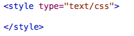
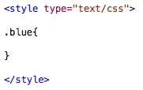
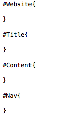
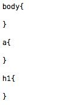

Web Site Design & Construction
Styling information is stored in our header, remember that part from way back? There are two ways of declaring styling information within our web site. The first, which we will cover, is writing the style internally on each page. This can be convenient for style elements which are only active on one page, but becomes tedious and exhausting if you want the same style on multiple pages. The second is an external style document which is called in to the page at runtime and stores all of the style information. We are going to start out our styling with the former and then rapidly transition over to the latter method, probably on the last page of this section, but we'll see.
First thing we need to do before we start grappling with CSS is to give ourselves somewhere to put it, so find your header section and put the following code in there:
Style tags. They're so ... stylish! 
The tags above are how we denote that the contents will contain styling information. In the opening tag you'll notice that there is an attribute called type, this tells the browser what type of style will be coming up. So for our style we'll be inputting in text and it will be interpreted as CSS.
Now we have our styling section we can start to populate it with stuff which will make our website nice and pretty. To do this we need to use CSS selectors. These selectors ensure that the encompassed styling will only be applied to the sections we want. There are three types of selector, two of which we have covered briefly before. There is the Class selector, which utilises the class attribute in our HTML to assign the CSS. We use this by using a full-stop "." and then the class name. For example we have a class in our document called "blue" so our class within our style would be .blue, after you've chosen your selector you use squiggly brackets, { and }, to open and close your CSS for that selector. Do this for your "blue" class. It should look something like this:
The class selector. Selects a specific class. 
At the moment we have no style within that class, but we'll get to that. The second selector is the ID selector which, if you remember from our HTML Basics section, can only be used once per page. This uses the id attribute in our HTML. We use this selector by using a hash followed by the name of the ID. We have an overall wrapper around our web site called "Website" so create our selector for that ID in our CSS block. Actually, go through and create one for all our IDs in our page, there should only be four:
ID selectors. So cool. 
Again, there is no actual CSS within these selectors, but they're there for when we want to style them. The third, and final, type of selector we could, and probably will, use is the tag selector. This selects all tags and styles everything inside them. For example, I hate how anchor tags default to blue and are underlined, so to change this for all anchor I would just use the anchor tag selector within CSS, which is done by just typing the tag and putting our curly brackets as per normal. I'm going to use this selector to change the anchor tags, the heading tag which I used and the overall body of the page. Like so:
This is what I mean when I say that CSS is powerful. 
Next »This has given us our overall structure for our web page's style. Now all we need to do is add the styling information. And that won't take long at all. Will it? Yes? No? Maybe? I dunno. We'll see. It's not overly complex, but it is a long process. You see CSS is powerful, but it can also be temperamental. Hopefully this doesn't happen today. Also, I should note that what I'm doing in this tutorial is just one way of doing things.